群馬の養蚕信仰について語らせていただく。
きっかけは1冊の写真集だった。
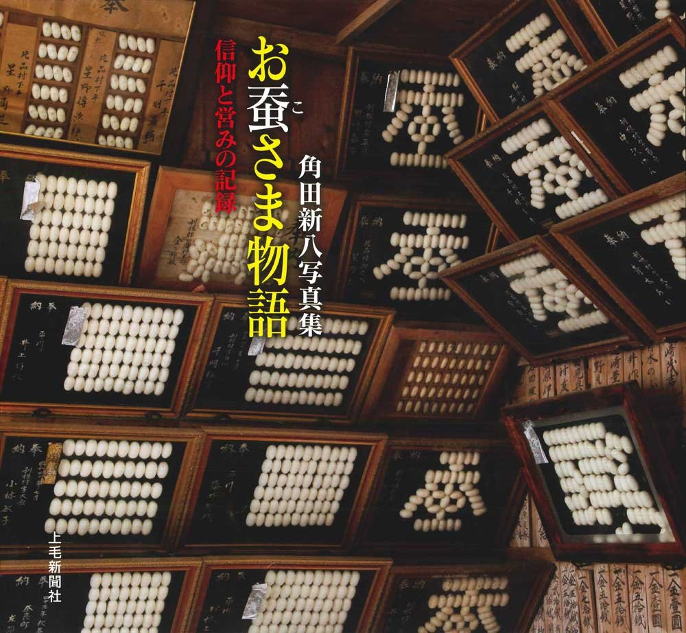
お蚕さま物語 信仰と営みの記録 角田新八写真集 上毛新聞社
本サイトの姉妹サイト
日本すきま漫遊記の管理人の深草さんから教えていただいた写真集。
何といっても表紙の
繭玉奉納の濃密具合に腰を抜かしそうになった。
蚕を育てて絹糸を得るという生業にこれほどまでの信仰心が付随していたのか！と。
早速写真集を購入し、すぐに写真の養蚕神社に赴いたのであった。
今思えばコレがこの後数年に亘る長い群馬通いの旅の始まりだったのですよ…。
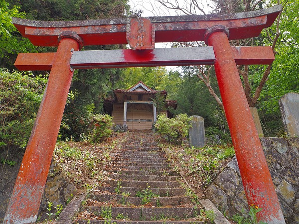
養蚕神社は沼田市にあり、道中何となく知ってる道だな～と思っていたら天狗のお面で御馴染みの
迦葉山弥勒寺の近くだった。
ブドウ園やリンゴ園が点在する農村の山の中腹に神社はある。
小さな小さな神社だった。
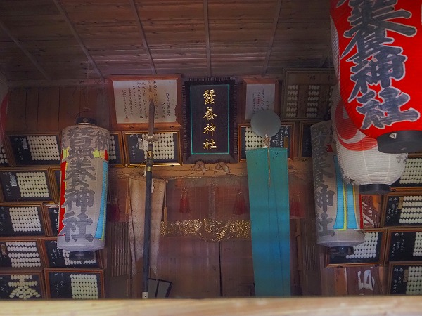
普段は鍵が締まっているのでガラス越しに中を見てみる。
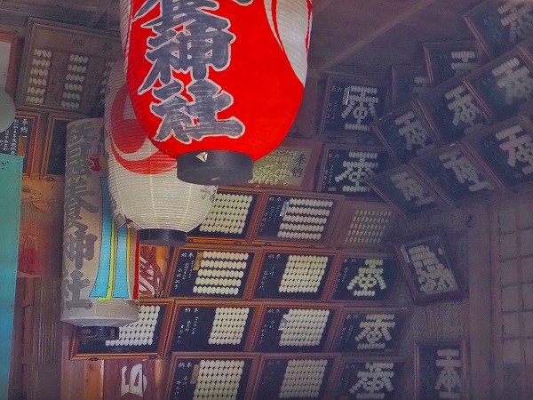
ををを～！
繭玉の奉納が壁中にかかっていて隙間がないほど。
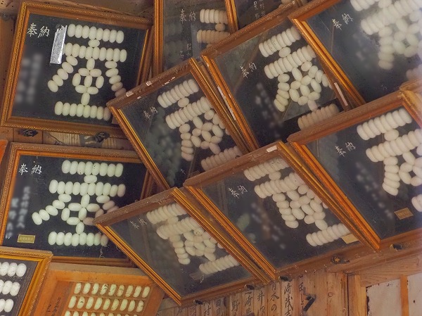
中でも「蚕」という文字を象った奉納額はえもいえぬ迫力がある。
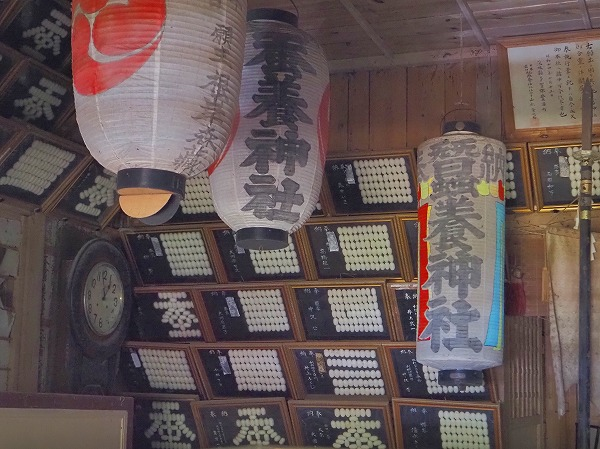
この繭玉奉納は「蚕が当たる」（沢山絹が取れる事をこう呼ぶそうな）事を祈願して奉納したものだが、品評会的な側面もあるという。
額に金や銀の紙が貼られているのはそれぞれ金賞、銀賞という事なのだろう。
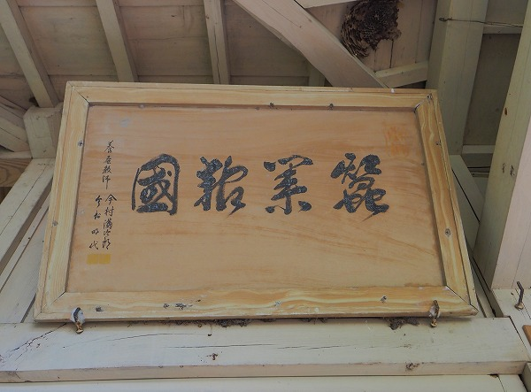
額には
蚕業報国とある。
明治期、主要な輸出品であったシルクはまさに当時の
国家の屋台骨を形成する産業だった。
そして当たり外れの多い生業だったとも聞く。
だとすれば神様に頼むのもそれはそれは真剣だった、ということだろう。
こうして群馬各地に存在する養蚕信仰の現場を訪れる修行の日々が始まるのだ。
以下時系列はバラバラだが思い出した順に養蚕信仰シーンを紹介していきたいと思う。長くなるぞ。
（2016.11. 2025.05.）
みなかみ町の
真沢稲荷神社。
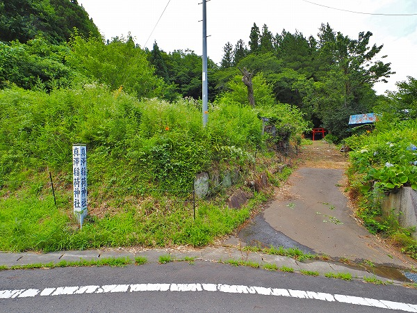
ここもお蚕さま物語に出ていた神社である。
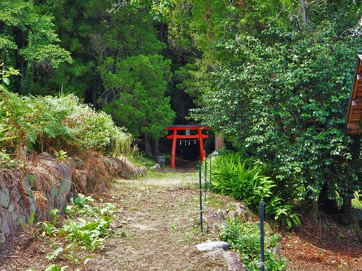
参道を遮る形で電気柵が敷設してあった。
隣接する畑の熊や鹿の侵入を遮るものなのだろうが、果たして触って大丈夫なものなのだろうか？
ここは陸上の高飛びのように背面ジャンプして跳び越えねばならないのだろうか？
そもそも電気柵のショックってどんなもんなのだろう？
そういえば昔、親戚が畑の果物を取ろうとして電気柵に触れてウギャー！ってなってたっけ。
そりゃそうだよな。熊も嫌がるレベルなんだもんな。そもそも勝手に果物取るなよ。泥棒だぞ。
…と、逡巡したが、よく見ると神社に参拝する人のために手動で電線を外す箇所があったので無事中に入れた。

石段の上に小さな社殿がある。
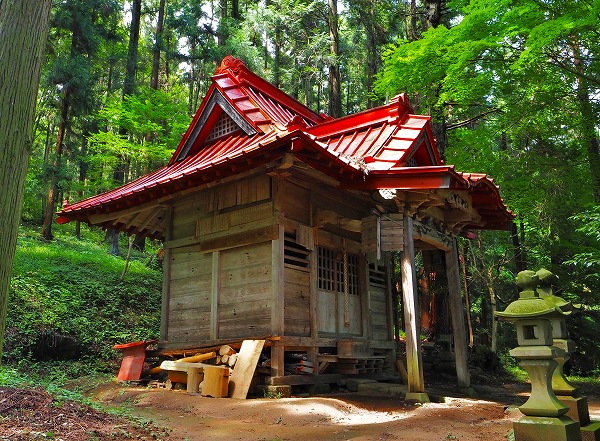
社務所も何もない小さな神社だ。
内部はこんな。
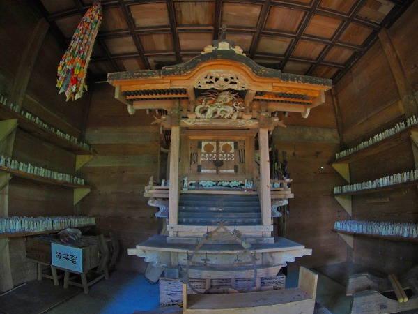
左右の壁に棚が設けられており、
大量の陶器の狐が並んでいた。
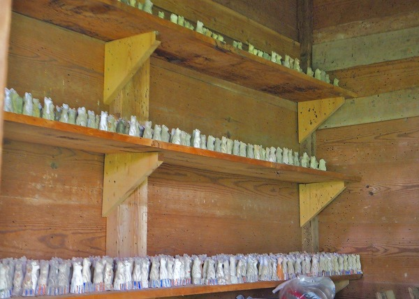 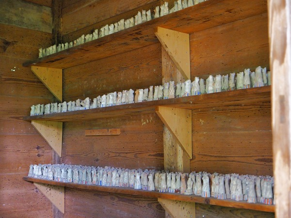
薄暗い室内にズラリと並ぶ大量の狐像はそれだけで充分迫力があった。
「お蚕さま物語」の写真では裏壁面も含め3面に棚が設けられていたが、裏面の棚は無くなっていた。
しかも4段だった棚が3段に減っていた。
これをどう見るか。
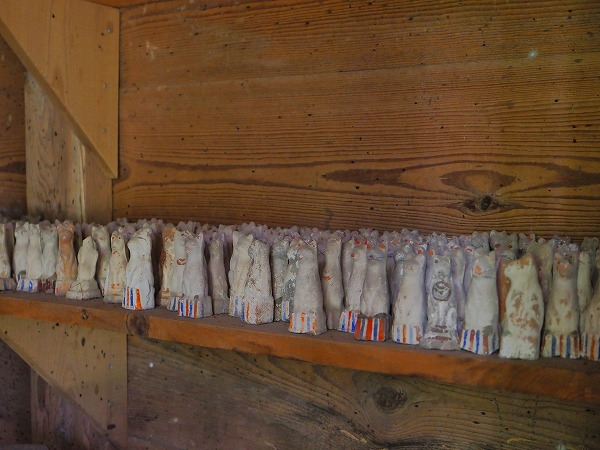
狐の陶器はいわゆる
鉄砲狐、あるいは今戸狐と呼ばれる縦長の狐像だ。
一般的には稲荷様にある狐の陶器と言えば左右一対のものが思い浮かぶと思うが、どういうわけか鉄砲狐ばかりだった。
この後、判る事だが結論として群馬の養蚕信仰シーンでは狐と言えば鉄砲狐がほとんどだった。
ちなみに帰りに判った事だが、電気柵は通電してませんでした。トホホ…
（2022.07）
前橋市の
片貝神社。
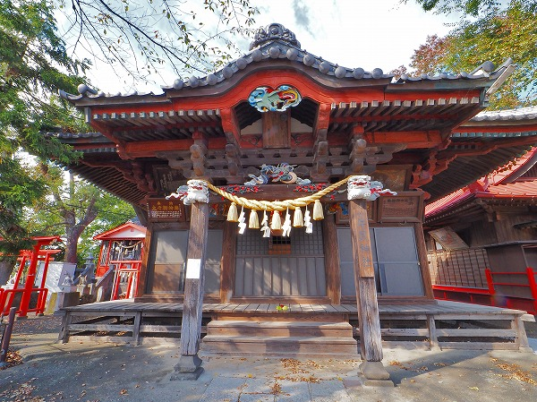
前橋の中心部から2～3キロほど西にある神社だが、周辺は田畑が広がる農村地帯だ。
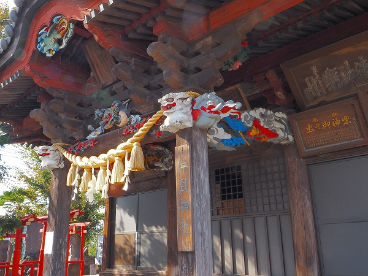
社殿の装飾の彩色に独自のセンスが感じられる。
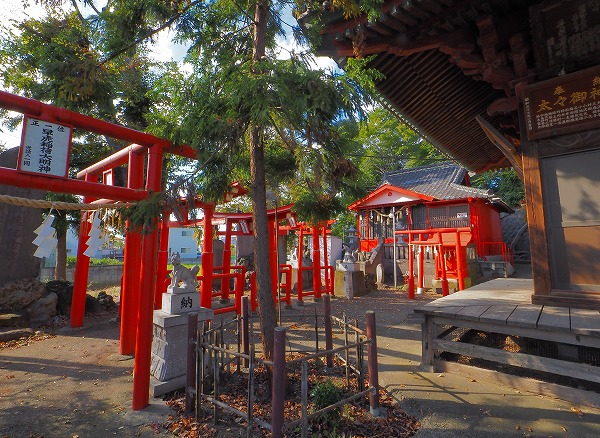
そんな神社の一画に
早虎稲荷という稲荷社がある。
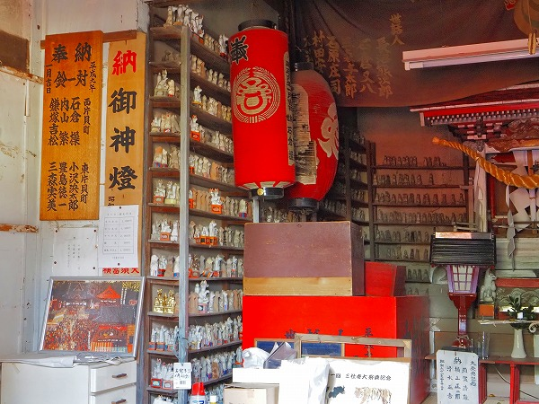
ここにも大量の狐が奉納されていた。
沼田の真沢稲荷神社に比べると左右対称の狐なども混ざっているがやはり鉄砲狐が多い。
何となく群馬の養蚕信仰の方向性が見えてきた。
稲荷神社において鉄砲狐を奉納する。
コレが養蚕信仰の本質と見た。
今後、稲荷神社の鉄砲狐奉納に的を絞って調査を続けてみる事にする。
（2022.10.）
渋川市の
坂下稲荷神社。
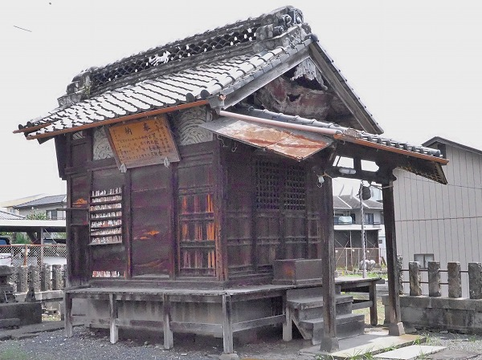
渋川市街の北側の住宅街の中にある小さな神社だ。
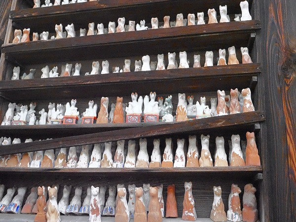
社殿の外壁に棚があり、狐像がずらりと並んでいる。
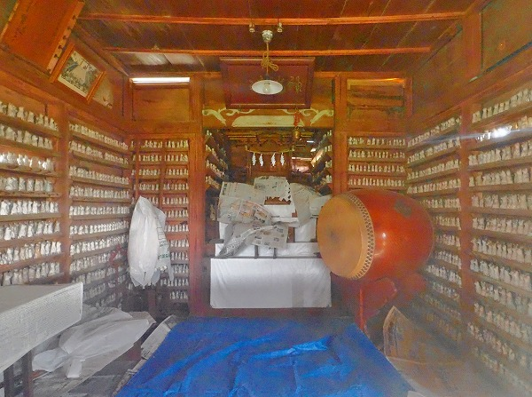
内部。
チョットビビる位の数の狐が並んでいる。
何故養蚕家が稲荷を信仰するのか。
それは稲荷神の眷属が狐であり、
狐は蚕の天敵のネズミを捕まえるから、という論法らしい。
同じようにネズミを捕まえる、という理由から東北地方では猫を信仰するネコ稲荷というものがある。
それはまた別の機会に紹介することとしよう。
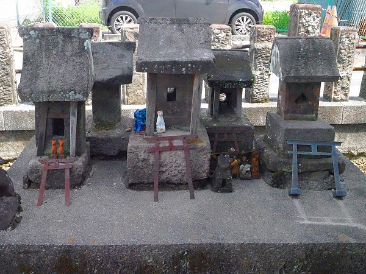
社殿の脇の石祠にも狐が置かれている。
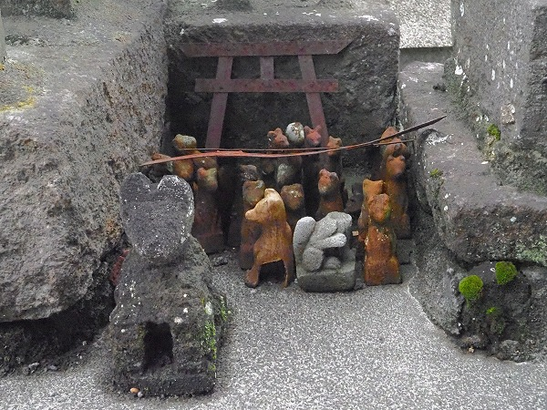
こうなると稲荷信仰、というよりは
狐信仰と言った方がしっくりくる。
実際、養蚕家はネズミを捕食してくれれば狐でも猫でもどっちでもいいのだろう。
（2022.07.）
前橋市の敷島公園内にある
蚕糸記念館。
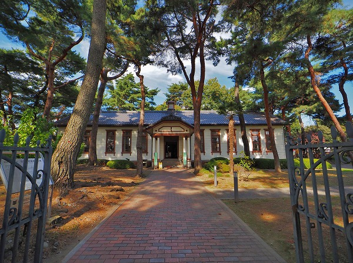
養蚕に関しては全くのド素人なので、ここで養蚕の勉強をすることにした。
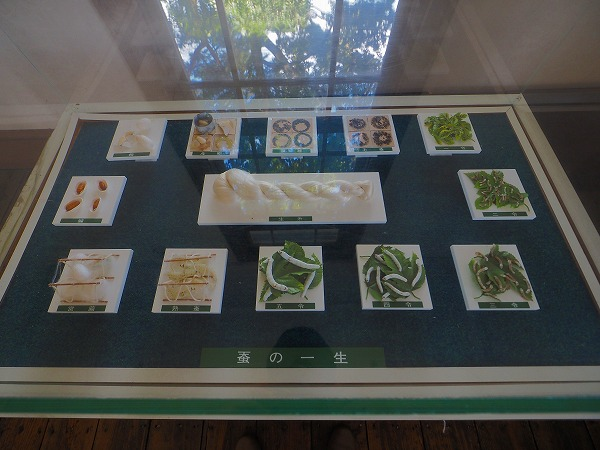
ここでは養蚕に関する様々な展示があり、蚕から絹がとれるまでのプロセスを知ることが出来る。
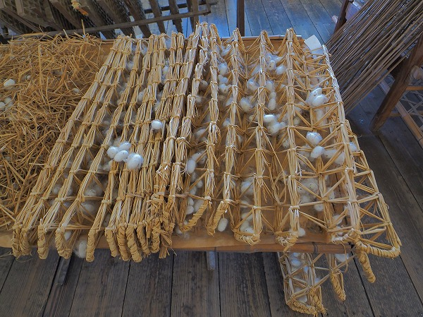
藁まぶし。
蚕の繭を固定するためのフレーム。
皇室の繭づくりでも確かこれが採用されていたはず。
中でも着目したのはもちろん養蚕信仰関連の展示。
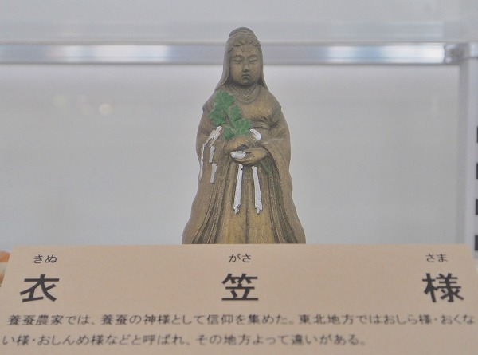
養蚕の神様、
衣笠様。
東北地方ではこの神様が
オシラサマになるそうな。

これも衣笠様。
頭に反物、右手に蚕種紙、左手に桑の葉を持っている。
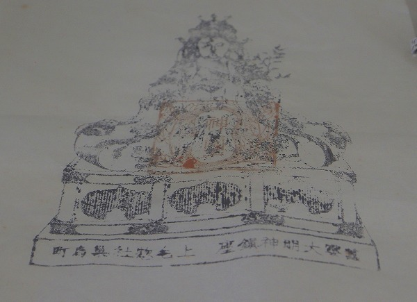
養蚕大明神のお札。上毛惣社の名がある。
これは前橋市の
総社神社の事か。
養蚕の神様としては先にあげた衣笠様や蚕影神、馬鳴菩薩などがあり、養蚕信仰関連の論文や専門書などもこれらの信仰に関しての研究調査が盛んだ。
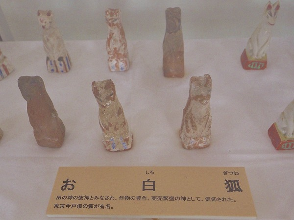
しかし
私が最もホットに感じたのはこの狐の奉納習俗だ。
何といっても奉納物の数が圧倒的に多い。
専門書などでは「その他の民間信仰」扱いなのだが、実際に訪れてみると狐奉納が一番信仰の熱量が感じられるのだ。
群馬の養蚕信仰のホットゾーンはそれぞれのムラにある素朴な稲荷神社だ、と睨んだ。
（2022.10.）
お次は前橋市の
興隆寺。
前橋の繁華街からもほど近い場所にある。
江戸初期に前橋城主が開山した寺だ。
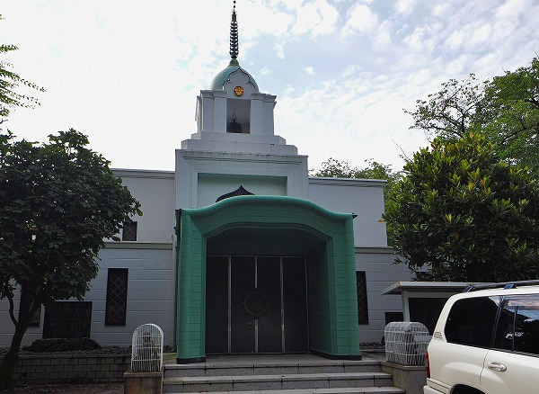
インド風？モスク風？な外観が印象的な寺。
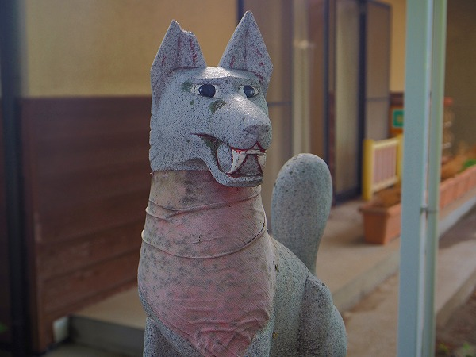
ちょっとロボっぽい狛犬。
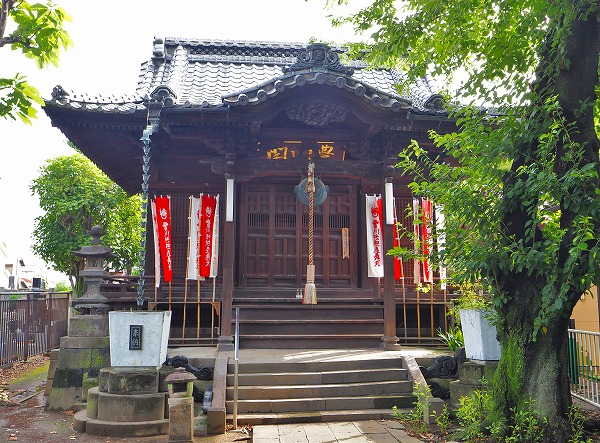
境内に豊川稲荷がある。
ここは豊川稲荷と同じ曹洞宗の寺院なのだ。
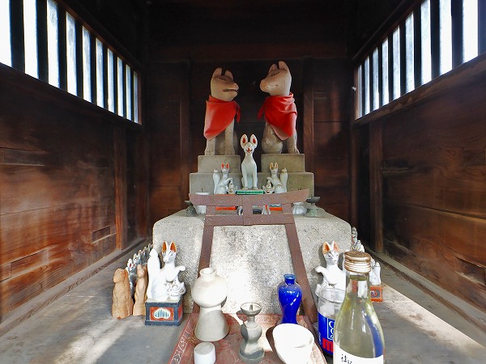
堂内には狐像が安置されていた。
しかし圧巻なのはお堂の裏手。
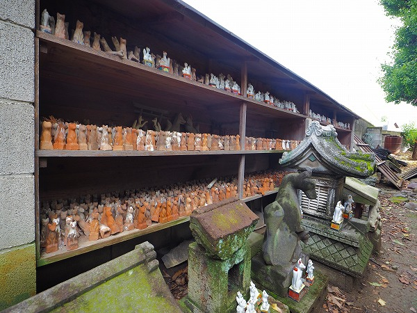
大量の狐像がひしめいている。
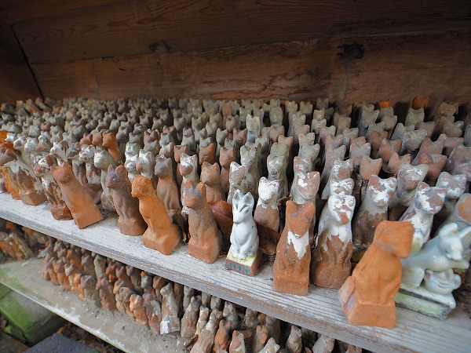
多くは鉄砲狐だ。
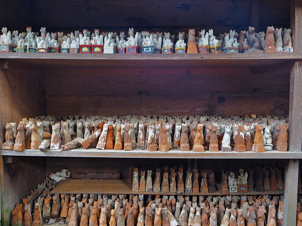
この鉄砲狐、素焼きに白くペイントしてあるのだが、釉を塗ってないので屋外に晒しておくと色が取れてしまうのだ。
最上段の釉か塗られた左右対象の狐が色落ちしないのに比べてその耐久性は歴然としているのが判る。
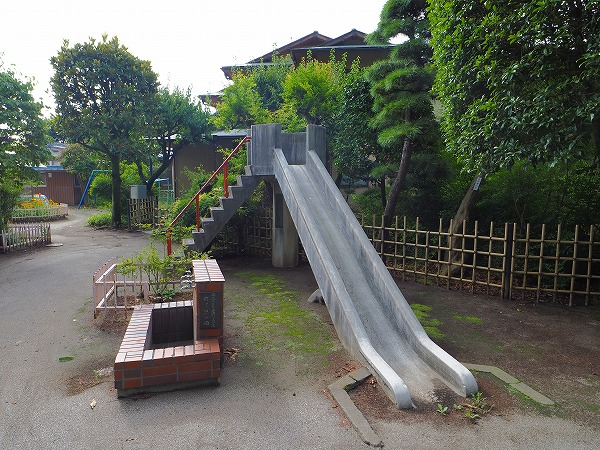
境内にあった重厚感溢れる滑り台。カッコいい。
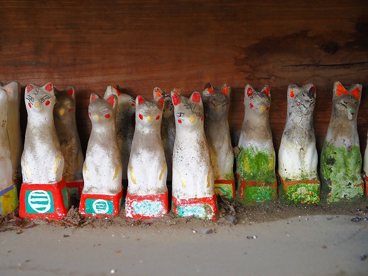
苔で青くなってしまった狐。
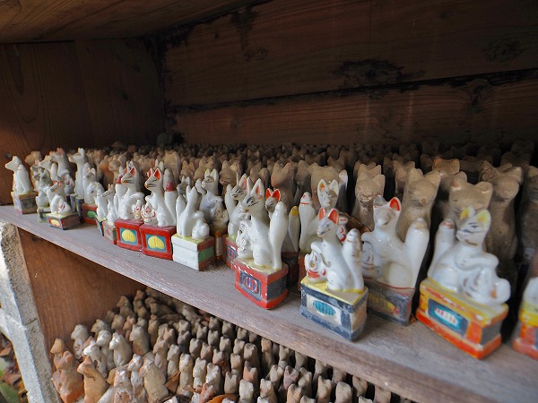
一方陶器の狐はツヤツヤしていて古いんだか新しいんだか良く判らない。
（2022.07.）
お次は高崎である。
この日は他の用事があり電車で高崎に来たので物凄く久し振りに上信電鉄に乗ってみた。

って一駅だけですけどね。
で、訪れたのは市街の南にある
琴平神社。
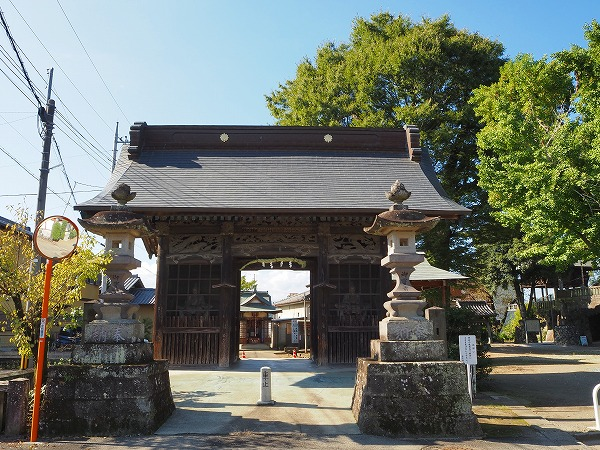
ここも日本すきま漫遊記の深草さんから昔教えていただいた神社だ。
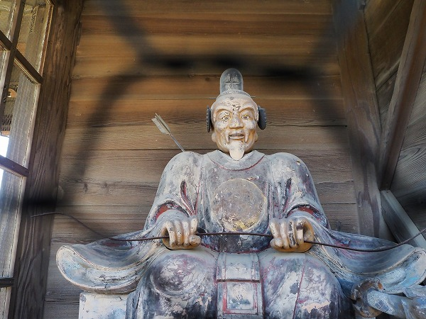 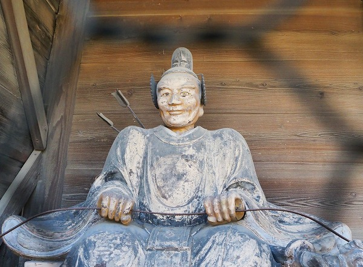
神社だけに山門（神社では随身門という）の中には右大臣と左大臣がいらっしゃいましたよ。
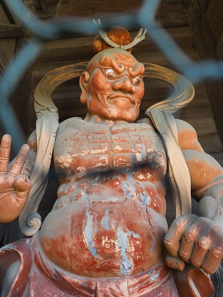 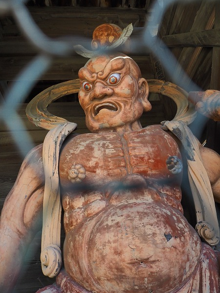
でも裏側にはキッチリ仁王様がいらっしゃいました。
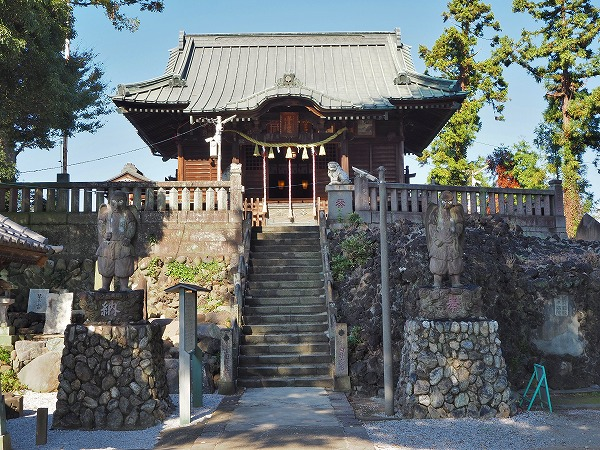
この神社は元々稲荷社だったのを文化年間に讃岐のこんぴらさんから分霊したのだとか。
高崎、海ないからいいじゃん、とは思ったものの水運の船の安全祈願なのかも知れない。
すぐ近くには烏川という大きな川が流れているのだ。
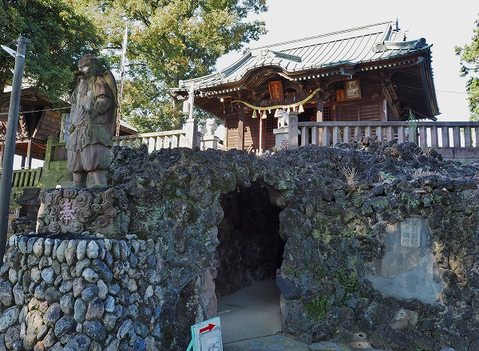
この神社の最大の特色は拝殿下にある人工洞窟だ。
富士ボク、ではないようだが、黒っぽい石を積み重ねてある様はどこか富士塚を思わせる。
碑文によると昭和の初めに造られたものだ。
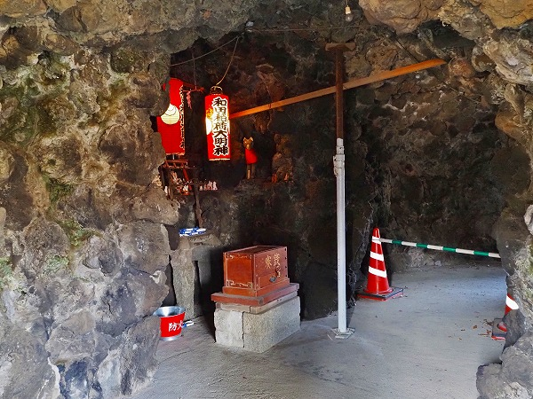
洞窟を進んでいくと提灯が見える。
以前はこの先の通路を通って別の出口から外に出れたのだが通行止めになっていた。
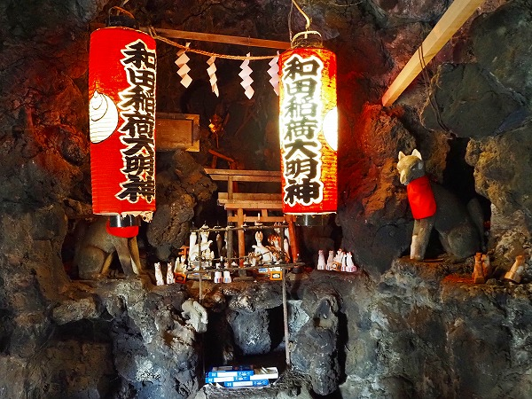
和田稲荷というのか。
昔、稲荷神社だったが琴平神社になってしまったために、地下に稲荷を祭っているのだろうか。
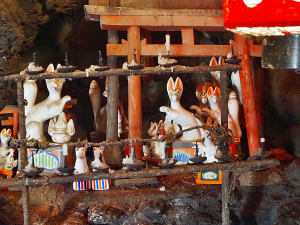
雰囲気は抜群だが狐の奉納は少なかった。
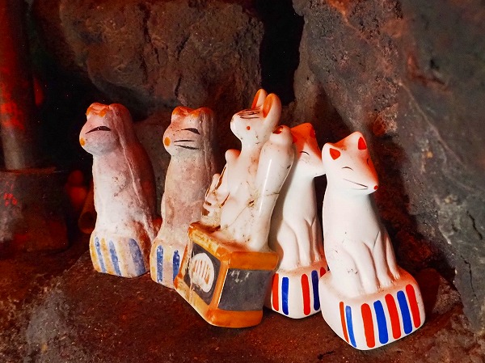
鉄砲狐も数えるほどしかなかった。
やはり稲荷社でなくなってしまったから、養蚕信仰の拠点とは成り得なかったのだろうか。
通行止めされている側の出口。
入口と出口がそれぞれ別、という構成の洞窟はやはり萌えますな～。
で、本殿。
琴平（金比羅）社だけに船の写真も奉納されていた。傍らには昭和天皇の肖像。
妖しい笑みを浮かべる大黒様。
何故か飛行機の模型が奉納されていた。
期待には護国通遼號とあった。
通遼とは中国北東部、いわゆる旧満州の都市。
何か由縁のある人が奉納したのだろうか。ちゃあんとパイロットまで乗っている。
こちらは米軍機と日本機。
古いものかと思ったら案外最近の奉納だった。
船の神様、琴平神社だけに乗り物全般もOK！ってことなのか？
チンチン奉納もありました。
先はまだまだ長いので一旦休憩しましょう
（2024.10.）
次の養蚕信仰へGO！